Project 4
Part A: Image Warping and Mosaicing
In this part I take photos from a fixed point, recover the homographies between them from point correspondences, warp them with inverse warping, and blend them into mosaics.
A.1: Shooting the pictures
For each set I stood in one place and rotated the phone between shots, keeping a large overlap between neighboring photos.
Kitchen


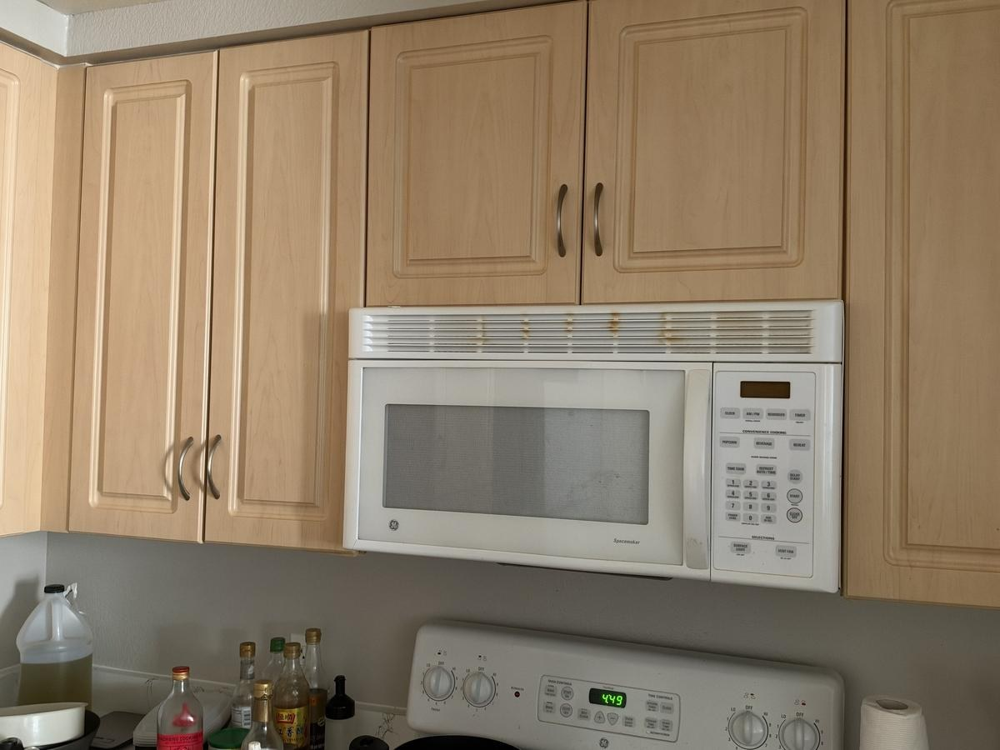
Gate
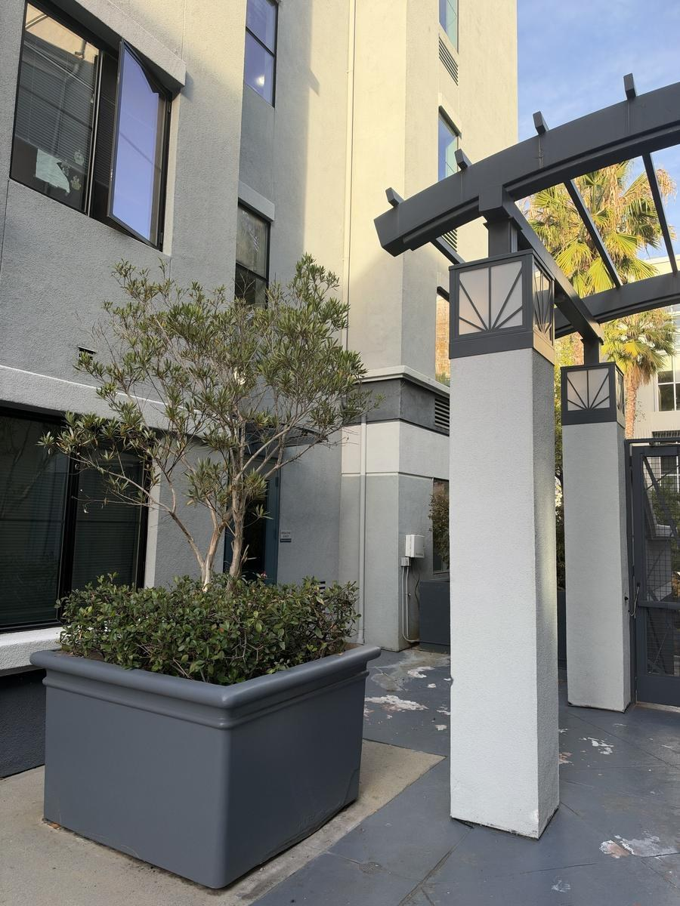
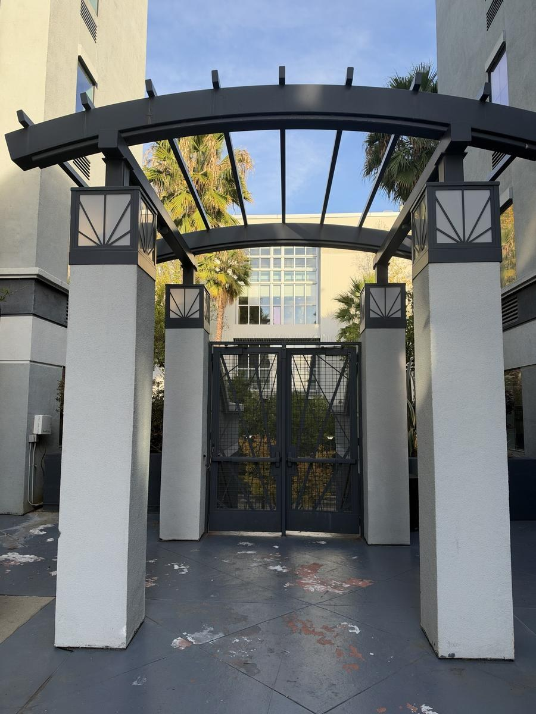
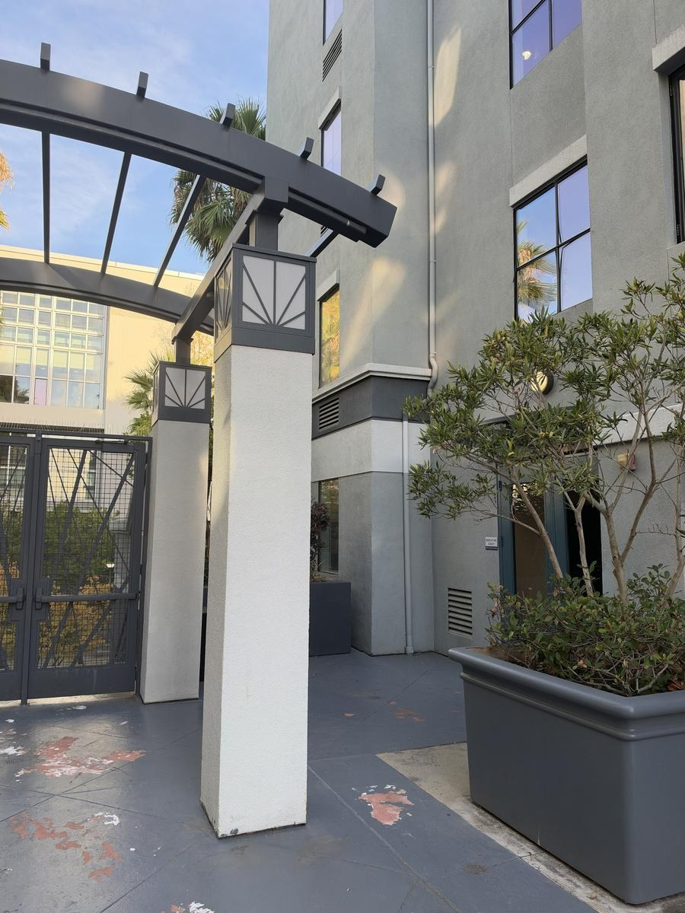
Courtyard

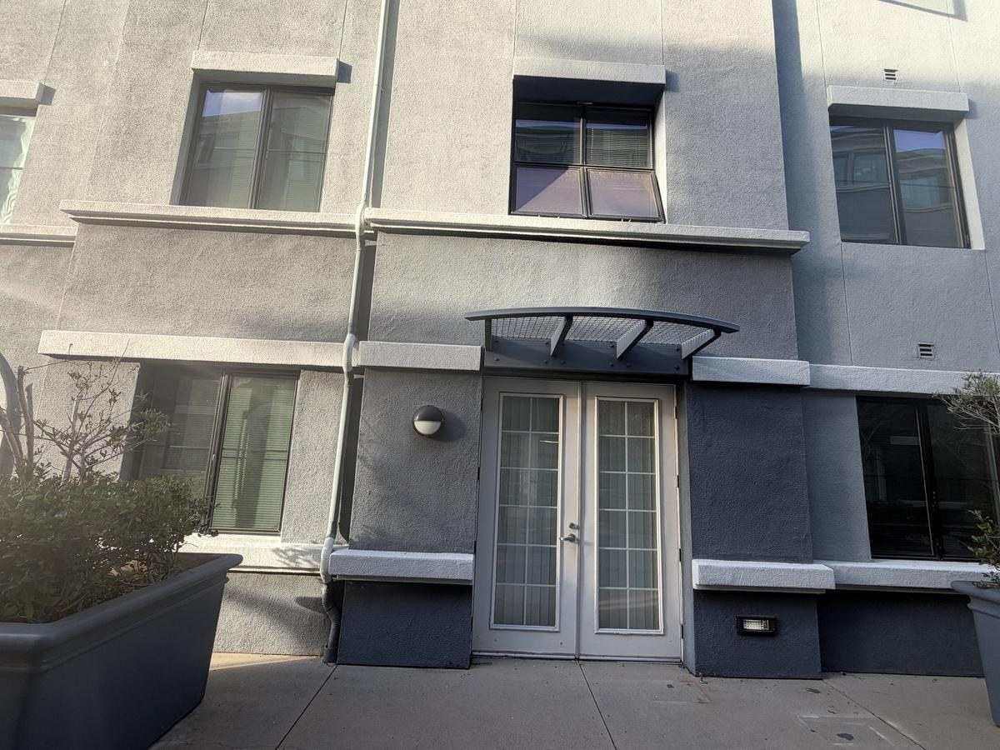

A.2: Recovering homographies
Each correspondence is a point \(p = (x, y)\) in the left image and the point \(p' = (x', y')\) in the center image that shows the same spot. The homography \(H\) maps one to the other in homogeneous coordinates:
\[ \begin{bmatrix} a & b & c \\ d & e & f \\ g & h & 1 \end{bmatrix} \begin{bmatrix} x \\ y \\ 1 \end{bmatrix} = \begin{bmatrix} wx' \\ wy' \\ w \end{bmatrix} \]The last row gives the scale \(w\):
\[ gx + hy + 1 = w \]Substituting \(w\) into the first two rows:
\[ ax + by + c = (gx + hy + 1)\,x' \qquad dx + ey + f = (gx + hy + 1)\,y' \]Moving every term with an unknown to the left makes both equations linear in \(a, \dots, h\):
\[ ax + by + c - gxx' - hyx' = x' \qquad dx + ey + f - gxy' - hyy' = y' \] \[ \begin{bmatrix} x & y & 1 & 0 & 0 & 0 & -xx' & -yx' \\ 0 & 0 & 0 & x & y & 1 & -xy' & -yy' \end{bmatrix} \begin{bmatrix} a \\ b \\ c \\ d \\ e \\ f \\ g \\ h \end{bmatrix} = \begin{bmatrix} x' \\ y' \end{bmatrix} \]One correspondence gives 2 equations and there are 8 unknowns, so 4 correspondences is the minimum. With \(n\) correspondences I stack all \(2n\) rows into \(Ah = b\) and solve it with least squares, which finds the \(h\) that minimizes \(\lVert Ah - b \rVert^2\):
\[ \underbrace{\begin{bmatrix} x_1 & y_1 & 1 & 0 & 0 & 0 & -x_1x_1' & -y_1x_1' \\ 0 & 0 & 0 & x_1 & y_1 & 1 & -x_1y_1' & -y_1y_1' \\ & & & & \vdots & & & \\ x_n & y_n & 1 & 0 & 0 & 0 & -x_nx_n' & -y_nx_n' \\ 0 & 0 & 0 & x_n & y_n & 1 & -x_ny_n' & -y_ny_n' \end{bmatrix}}_{A \;(2n \times 8)} \begin{bmatrix} a \\ \vdots \\ h \end{bmatrix} = \underbrace{\begin{bmatrix} x_1' \\ y_1' \\ \vdots \\ x_n' \\ y_n' \end{bmatrix}}_{b} \]
For these 8 correspondences the full system \([A \mid b]\) is:
\[ \left[\begin{array}{rrrrrrrr|r} 850.84 & 475.69 & 1 & 0 & 0 & 0 & -327539.37 & -183121.62 & 384.96 \\ 0 & 0 & 0 & 850.84 & 475.69 & 1 & -409756.04 & -229087.55 & 481.59 \\ 816.56 & 1135.06 & 1 & 0 & 0 & 0 & -250349.13 & -347998.05 & 306.59 \\ 0 & 0 & 0 & 816.56 & 1135.06 & 1 & -889764.60 & -1236818.13 & 1089.65 \\ 516.87 & 862.12 & 1 & 0 & 0 & 0 & -13924.48 & -23225.51 & 26.94 \\ 0 & 0 & 0 & 516.87 & 862.12 & 1 & -447423.35 & -746285.56 & 865.64 \\ 825.18 & 835.76 & 1 & 0 & 0 & 0 & -278803.57 & -282378.23 & 337.87 \\ 0 & 0 & 0 & 825.18 & 835.76 & 1 & -666151.31 & -674692.33 & 807.28 \\ 861.91 & 670.04 & 1 & 0 & 0 & 0 & -327672.32 & -254729.11 & 380.17 \\ 0 & 0 & 0 & 861.91 & 670.04 & 1 & -564275.24 & -438661.79 & 654.68 \\ 752.58 & 998.69 & 1 & 0 & 0 & 0 & -196746.99 & -261087.53 & 261.43 \\ 0 & 0 & 0 & 752.58 & 998.69 & 1 & -731191.68 & -970307.23 & 971.58 \\ 552.19 & 941.05 & 1 & 0 & 0 & 0 & -32485.34 & -55361.97 & 58.83 \\ 0 & 0 & 0 & 552.19 & 941.05 & 1 & -521548.98 & -888831.14 & 944.51 \\ 735.47 & 1074.06 & 1 & 0 & 0 & 0 & -174321.10 & -254573.70 & 237.02 \\ 0 & 0 & 0 & 735.47 & 1074.06 & 1 & -771383.00 & -1126506.35 & 1048.83 \end{array}\right] \]Solving it gives the homography (mean reprojection error 0.69 px):
\[ H = \begin{bmatrix} 1.55754 & -0.14138 & -648.12329 \\ 0.46293 & 1.36211 & -279.28968 \\ 0.00073 & -0.00008 & 1 \end{bmatrix} \]A.3: Warping the images
Both warps use inverse warping. I push the four corners of the image through H to get the output bounding box, then map every output pixel back through H⁻¹ to find where it comes from in the source. Nearest neighbor rounds that location to the closest pixel; bilinear takes a weighted average of the four surrounding pixels. Pixels that map outside the source get alpha 0.
For rectification I click the four corners of an object I know is rectangular and map them to a rectangle with its real aspect ratio: 85.6 × 54 mm for the ID card and roughly 3.7 × 8.5 in for one panel of the folded flyer. (The ID number and barcode are blurred.)
Student ID card

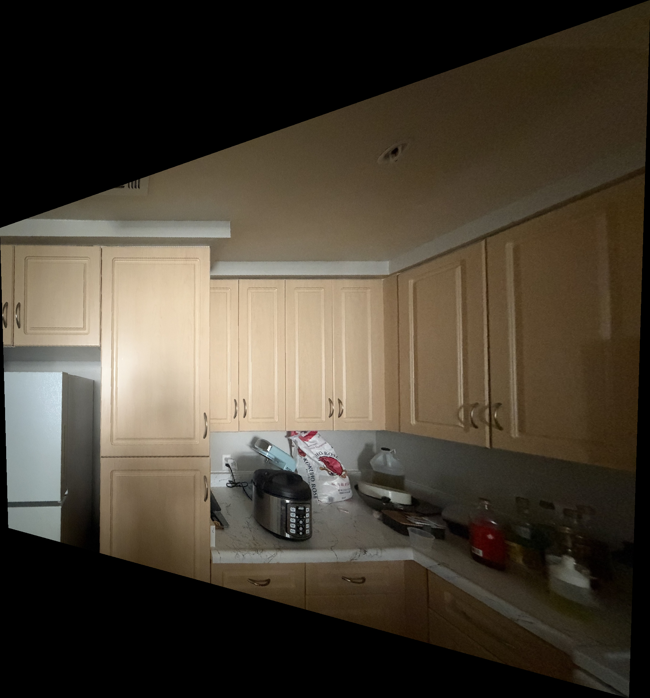
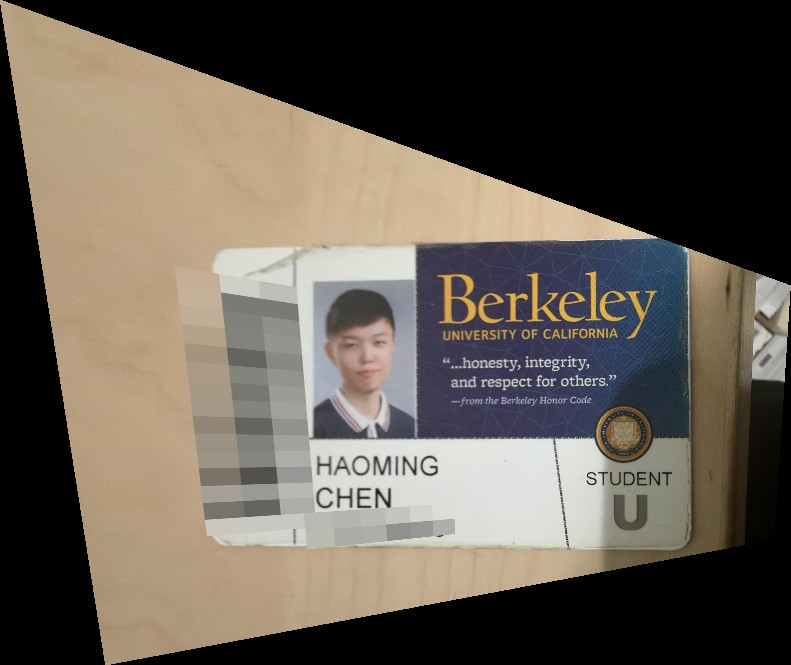
Flyer
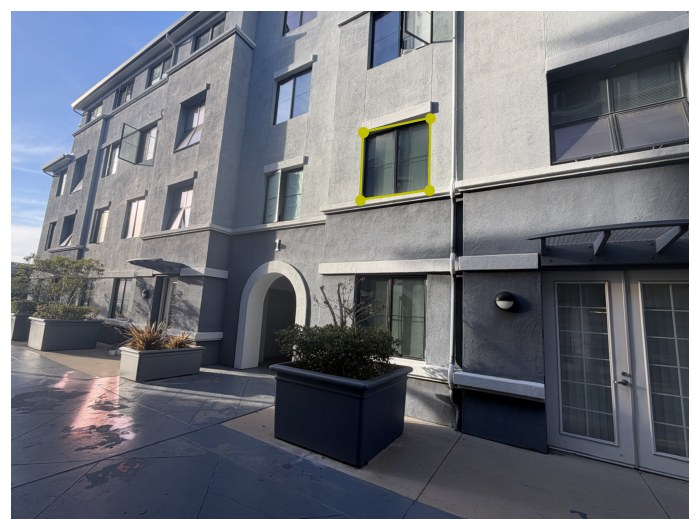
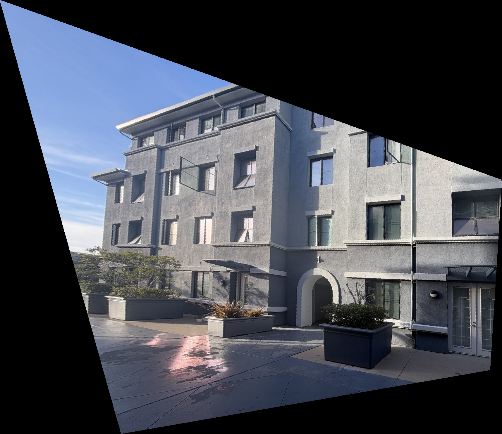
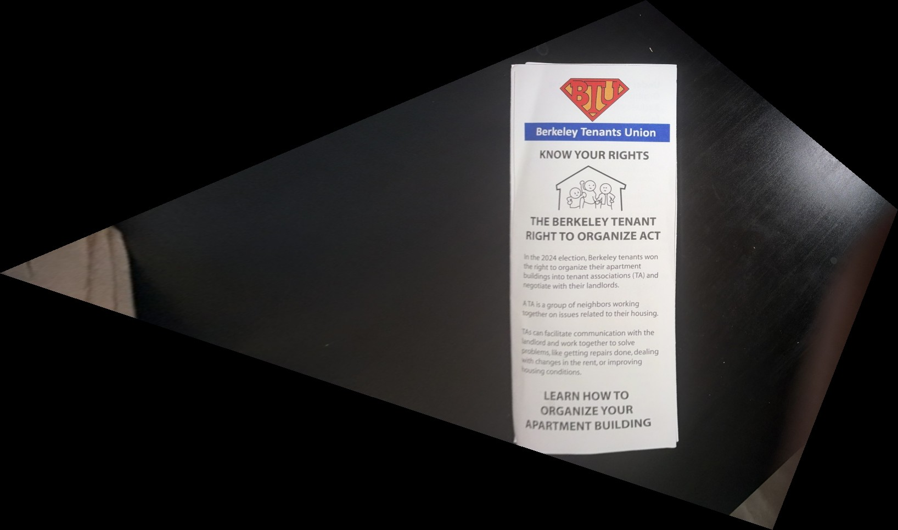
Nearest neighbor vs. bilinear
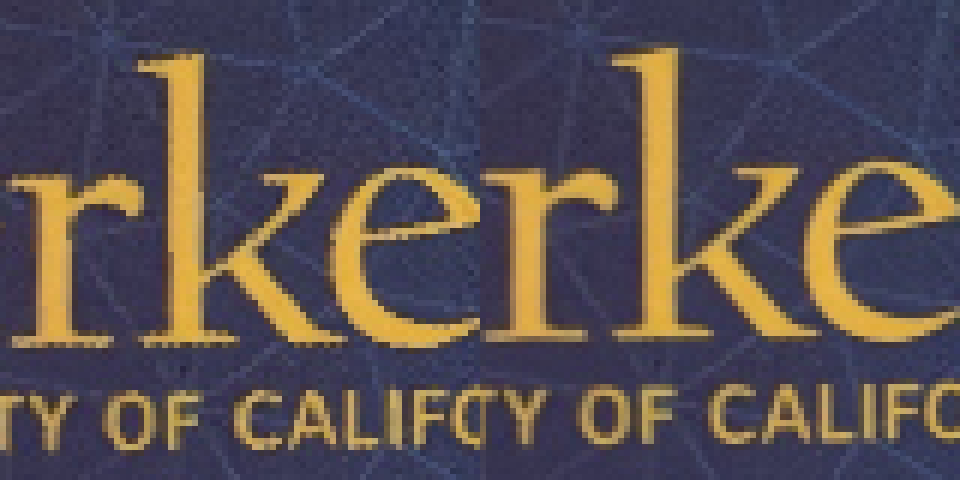
Nearest neighbor took 0.03 s and 0.07 s on the two images; bilinear took 0.06 s and 0.14 s, about twice as long because it reads four pixels and does extra arithmetic per output pixel. Nearest neighbor shows jagged edges on the letters, while bilinear is smooth. Bilinear is slightly blurrier but looks much better, so I use it for the mosaics.
A.4: Blending into a mosaic
I keep the center image fixed and compute a homography from the left and right images into it. Pushing every image's corners through its homography gives the size of one shared canvas, and I warp all three images into it with bilinear interpolation. Each image also carries a weight that is 1 at its center and falls off linearly to 0 at its edges.
Plain weighted averaging leaves faint ghosting wherever the alignment is a pixel or two off, so I use a two-band blend. The low frequencies are a weighted average of all images, and the high frequencies come from whichever image has the largest weight at that pixel. This keeps the color transition smooth while edges stay sharp.
Kitchen

Gate
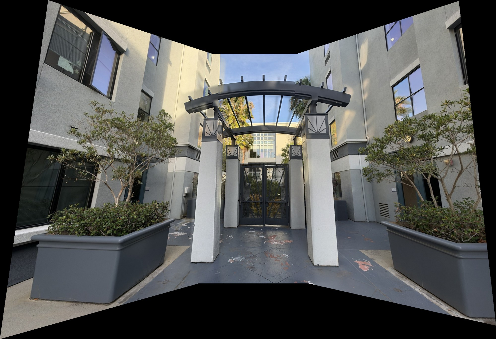
Courtyard
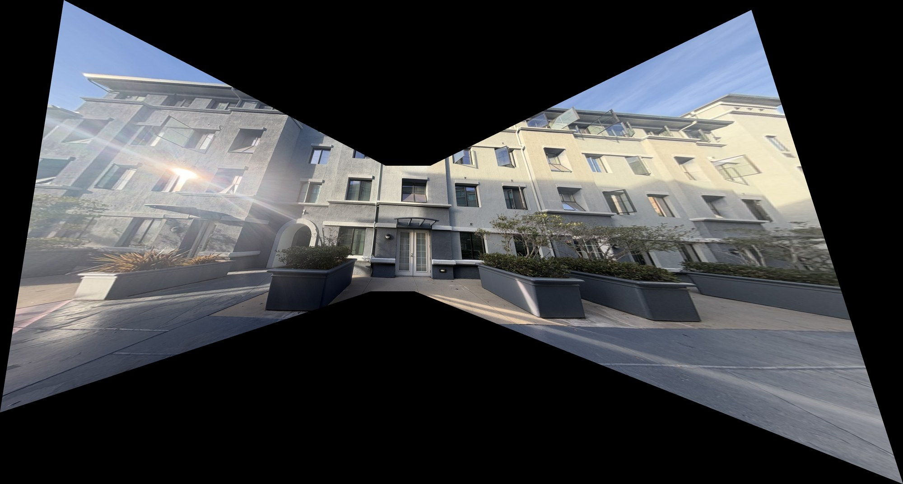
The courtyard was shot with the ultrawide lens, so the three photos cover a very wide angle. Projecting that onto a single plane stretches the left and right images heavily, which gives the bow-tie shape.
Appendix: correspondences for every pair
All correspondences were found with SIFT feature matching, using RANSAC to throw out bad matches; I then kept 8 well-spread matches per image pair. These are the points used for every mosaic.
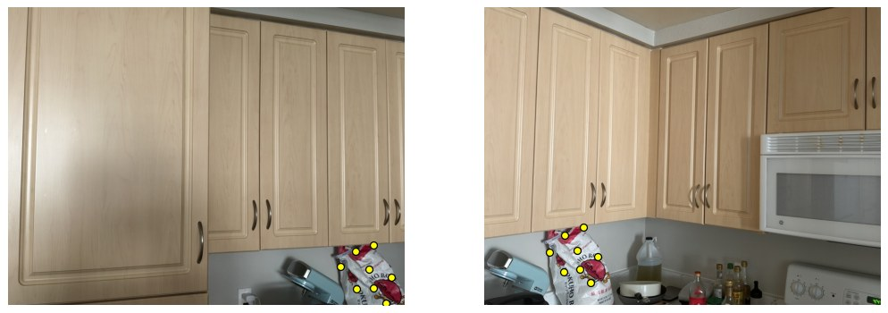
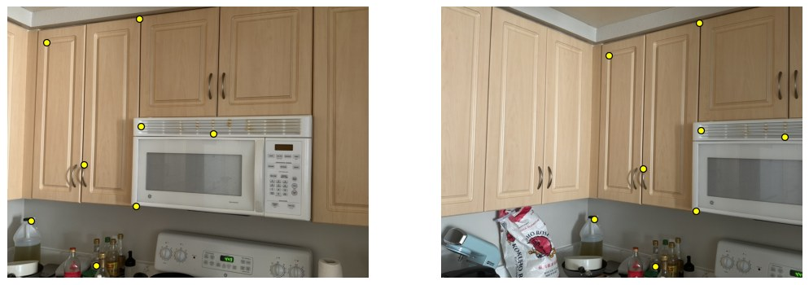
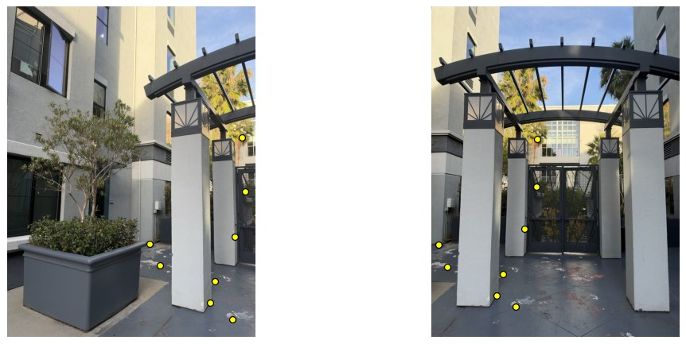
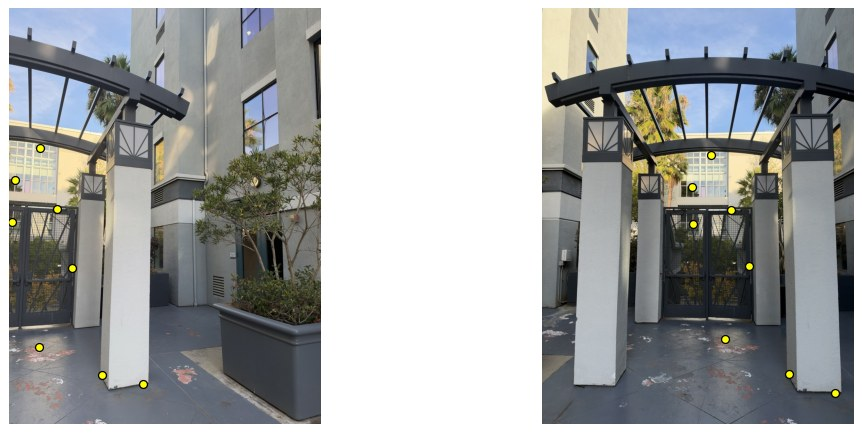
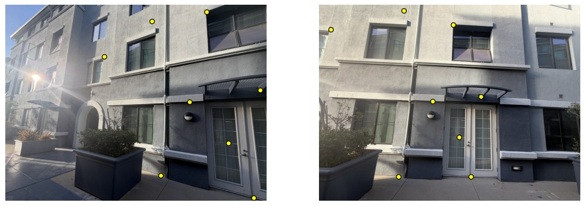
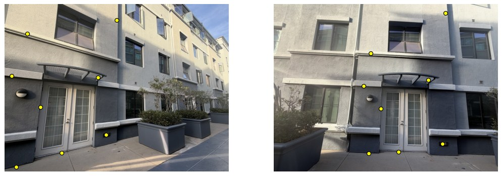